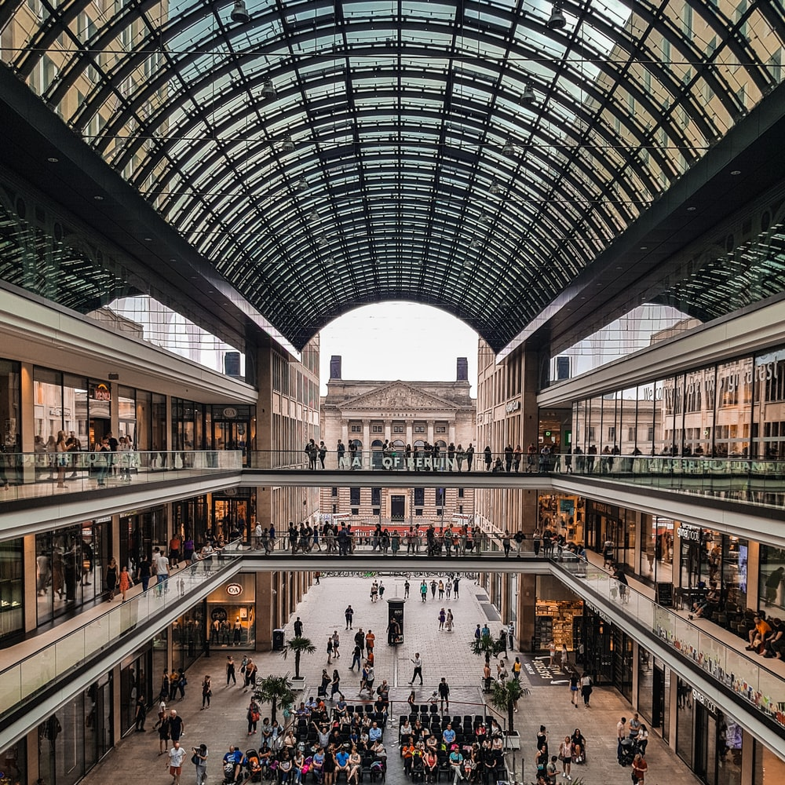

Italian Designers are synonymoues with style and accomplishment. Expats in Rome will find that shopping in Rome is
an exqusite experince. Big sales in January and July with makes thses months the best time to shop around. From
big labels to boutique bargains, the city's side streets and bargains have it all. The two most biggest
shopping streets in Rome Via Del Carso and Via Contii, which run from a spanish steps. Epats can find Fedi,
Gucci, Prada , and many other famous brands.


While the city might be known for its austere attractions, the nightlife in Rome an alternative life for
expats looking for night out in the town. With bars and clubs are are located in bulding that have been there for
centuries, exapnts will often find themselves partying in an interesting atmosphere where partying and history
occupy the same space.
One of the best night life in Rome are Capo 'di Fiori',is a squre in the city center that is close to the banks of the
Tiber. Popular with expats, tourists and locals, there are dozens of bars and restuarents that cater for a wide
variety of tastes. It is escpecially recommended that exapts go over after sunset for a drink or two to realx.

Expats will be spoilt for a choice when it comes to excellent dinning options in Rome. The countless Italian
eateries in Rome line the streets, each with its unique charn and flavour. While the reatuarent offering classic
Italian mainstays like pizza and pasta are plentiful, with a little exploration expats will find all sorts of hidden
gems with all sorts of exotic cusine ,like Thai dishes, Spanish ,etc.

With graet weather throught much of the year expats will have plenty of opportunities to get outside and make most
of the Eternal City. One of the best ways to get some frash air to experince the scienic areas of the city is to go on a
bicycle ride. Jogging and playing tennis are some of the famous activities in Rome.
As Rome is filled with football fans, expats will have ample opportunities to watch live games.